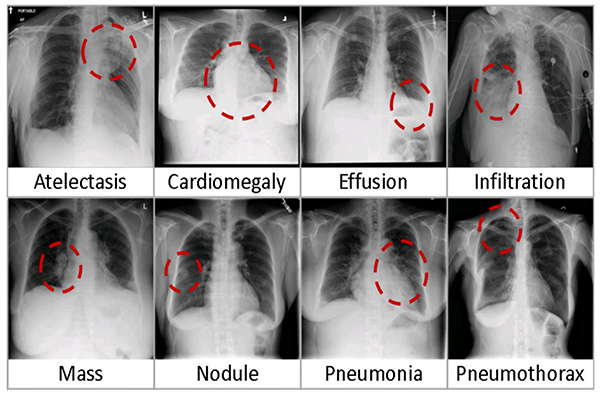
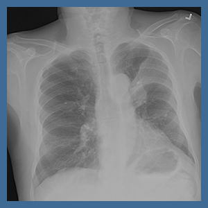
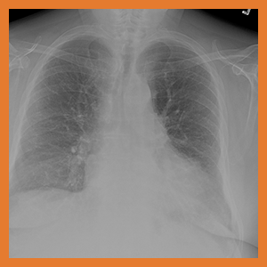
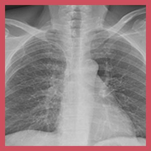
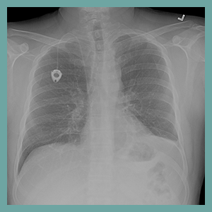
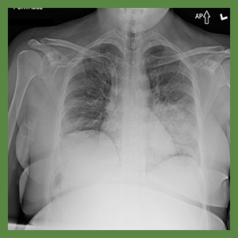
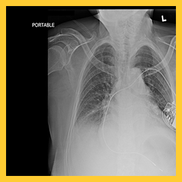
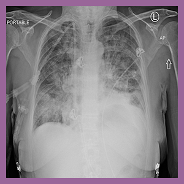
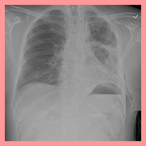

Descriptions and Visual Examples of Common Thoracic Diseases
8 Common Lung Diseases

Atelectasis

Collapse or closure of a lung resulting in reduced or absent gas exchange.
Cardiomegaly

Enlarged heart.
Effusion

Pleural effusion that arises as a result of a pneumonia, lung abscess, or bronchiectasis.
Infiltration

A pulmonary infiltrate is a substance denser than air, such as pus, blood, or protein, which lingers within the parenchyma of the lungs. Pulmonary infiltrates are associated with pneumonia, tuberculosis, and nocardiosis.
Mass

Pulmonary mass is any area of pulmonary opacification that measures more than 30 mm. The most common cause of a pulmonary mass is lung cancer.
Nodule

A small single mass in the lungs that's usually benign.
Pneumonia

Pneumonia is an inflammatory condition of the lung affecting primarily the small air sacs known as alveoli.
Pneumothorax

A pneumothorax is an abnormal collection of air in the pleural space between the lung and the chest wall.
Edema
Pulmonary edema is fluid accumulation in the tissue and air spaces of the lungs.
Pleural Thickening
Pleural plaques are patchy collections of hyalinized collagen in the parietal pleura.
Emphysema
Obstructive lung disease characterized by long-term breathing problems and poor airflow.
Fibrosis
Fibrosis is a respiratory disease in which scars are formed in the lung tissues, leading to serious breathing problems.
Hernia
Lung hernia (Sibson hernia) is a protrusion of lung outside of thoracic wall.
Consolidation
Region of normally compressible lung tissue that has filled with liquid instead of air.
Edema
Pulmonary edema is fluid accumulation in the tissue and air spaces of the lungs.